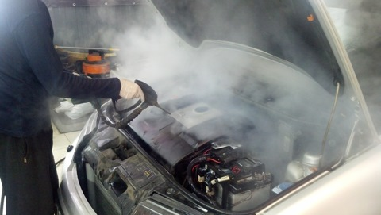
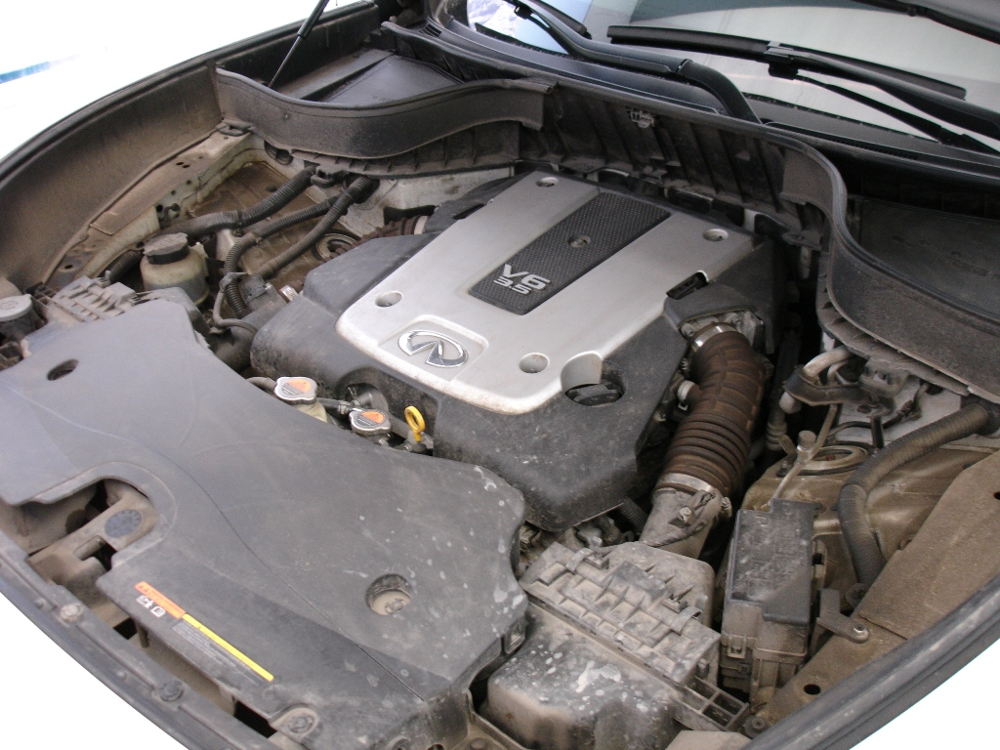
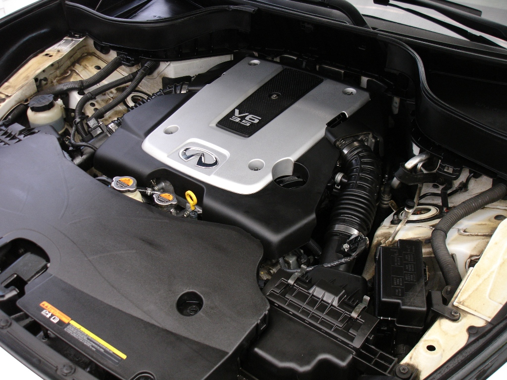

Мойка моторного отсека, мойка двигателя делается нечасто. Обычно после зимнего периода или в момент предпродажной подготовки.
С помощью парогенератора мойка двигателя может производится качественнее и безопаснее. Благодаря технологии от EcoCarWash® и проникающим свойствам пара, расщепляются и без особых усилий удаляются самые стойкие загрязнения, не нанося вред двигателю, проводке, уплотнителям и другим элементам. Грязь, жир, масло, смола, битум всё очистится без проблем в подкапотном пространстве и не только там.
После мойки двигателя паром он точно заведётся, в отличие от мойки двигателя водой. Исключена опасность залива, замыкания электропроводки двигателя и других его компонентов. Чистка двигателя паром, Новая безопасная технология мойки двигателя паром - это ещё один технологический шаг вперёд в автомоечной сфере, созданный для удобства людей и сохранения водных ресурсов нашей планеты.
Наномойка Антидождь Инновационный автошампунь Полировка «Жидкое стекло»